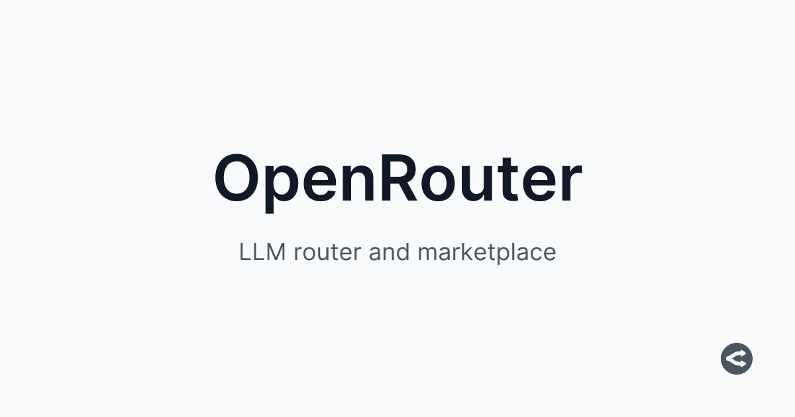
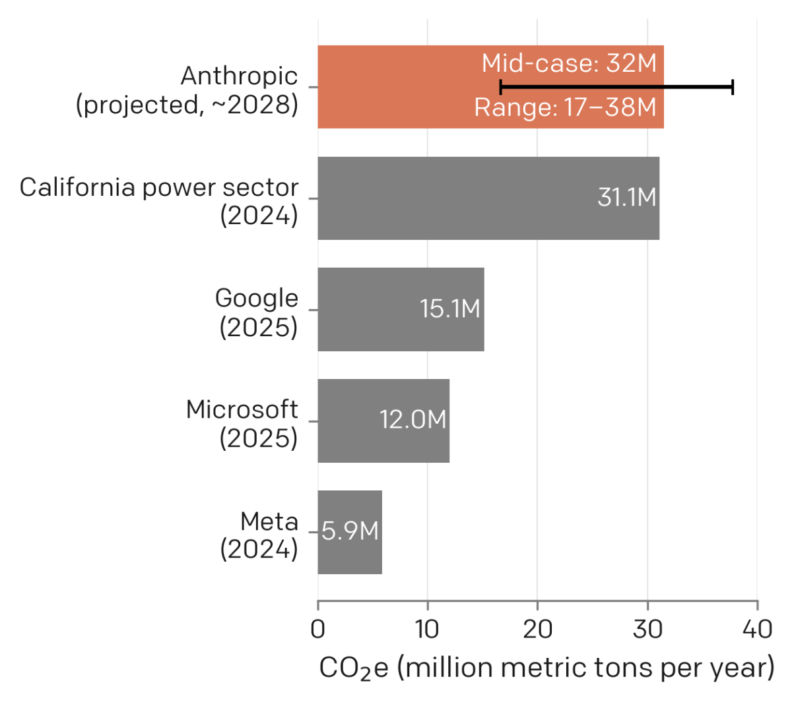

01
OpenAI 介绍对抗性蒸馏防御方案

OpenAI 介绍了结合模型训练、防护、检测和执行措施的分层方案，以抵御对抗性蒸馏及能力提取。这将保护模型视为持续运营问题，关联访问政策、监控和训练选择。已收集公告说明了方案组成，但未提供防御效果或成本的量化证据。
每天一次，过滤 AI 噪音
OpenAI 介绍了结合模型训练、防护、检测和执行措施的分层方案，以抵御对抗性蒸馏及能力提取。这将保护模型视为持续运营问题，关联访问政策、监控和训练选择。已收集公告说明了方案组成，但未提供防御效果或成本的量化证据。

OpenAI 推出 MedChemBench，评估模型解释分子结构、依据实验证据推理，以及在早期药物发现中选择有前景化合物的能力。该评测聚焦药物化学决策，而非一般科学问答。评测成绩仍须与实验室验证成功或临床获益明确区分。

Eugene Yan 拆解十二项公开基准，讨论如何解读分数、应追问什么以及应如何改进。在模型能力声明与应用演示密集出现时，这类方法审视尤其有用。团队选型应将公开成绩与自身任务定义及验证需求联系起来，而非以单一分数替代完整产品评估。

OpenRouter 表示，针对推理供应商的调查促使其移除三家供应商，并取消 125 个端点的零数据保留资格。潜在受影响客户已获通知；这些发现未显示 OpenRouter 本身遭到入侵。公司正引入持续测试、核查是否向第三方转发请求，并要求验证后才能恢复资格。

Better Data Center Project 估计，到 2028 年，Anthropic 在美国已签约数据中心容量所需电力可能有 87% 来自天然气、11% 来自煤炭。分析结合专用发电与边际电网供电，并依赖利用率和投运假设。这是预测而非实测结果，凸显 AI 基础设施的能源与污染问题。

Riemann Handbook 将一个声称证明黎曼猜想的 Lean 项目整理成数学文字，提供 PDF 与 EPUB。仓库明确说明：尚无人完整构建该 Lean 项目，也无人核对文字与代码。因此它是对主张的记录，而非独立验证；在自动化数学受到关注时，这一区分尤其重要。

桥水认为，AI 加速漏洞发现与利用，而防御和政策应对尚不足。文章强调防守方须保护庞大软件体系，攻击方只需找到缺口，同时 AI 生成代码增长扩大攻击面。作者承认近期停机事件原因仍不明确，因此应将其视为风险分析，而非对具体事件的归因。
Anthropic 发布了首席执行官 Dario Amodei 关于首次公开募股的讲话。已收集片段强调公司创立时希望让强大技术造福人类，以及创始人的个人动机。这是前沿模型行业的重要公司动态，但片段未提供募资额、估值、交易表现或治理变化。

Google 表示 Gemini 4 Hydrogen 已在 Gemini 应用和搜索中上线，定位于速度、日常任务及多种智能体工作流。其意义在于通过常用产品交付能力。已收集公告未提供价格表或受控评测，因此可以确认官方上线声明，但不能据此量化与竞品的差距。
Google 官方账号转发公告，宣布 Gemini 4 家族新增 Neon，强调编程、科学与知识任务表现。这扩充了其模型阵容。已收集公告较简短，未说明详细价格、部署限制或评测方法，因此具体开发工作流的选择仍需进一步验证。

Google 将 Gemini 3.5 Transcribe 的语音编辑能力引入 Gemini API。该技术已用于 Gboard 的 Rambler 和 macOS 版 Gemini，可通过语音编辑、改写和翻译现有文本，使语音交互超越单纯转录。公告未提供准确率或延迟对比，精确编辑场景仍需实际测试。

Runway 表示，自十月初以来，App Studio 合并的几乎所有拉取请求均由智能体编写。其体系会审查修改、在浏览器中测试，并将高风险决策交给工程师。重点在于生成代码之外的验证与升级处理流程；该说法针对 App Studio，不应扩大为整个公司的工程产出。

Luma 分享了 Ian Lihui Wang 制作的短片，以不断升级的水瓶广告修改要求为主题，并称作品使用 Luma MCP 完成。公司表示该集成已在 ChatGPT 和 Claude 上线，展示了通过 MCP 将视频生成接入对话助手的方式，但未提供成本、耗时或可靠性数据。

Pika 宣布上线 Seedance 2.5 Flash，面向广告创意、多版本尝试和批量生成。公告列明视频最长 30 秒，支持 480p 或 720p，可参考最多十张图片、五段视频及五段音频。这些限制有助于评估制作需求，但公告未给出价格或实测吞吐量。

可灵官方强调 Kling Image 4.0 的原生 8K 输出、图组一致性及文字渲染，并公布限时黑五价格：2K 每张最低 0.022 美元，原生 8K 最低 0.033 美元。这是促销起价，不代表所有使用方式的实际成本；创作团队还需评估画质与一致性。

Nathan Lambert 发布了后训练主要开放问题与领域发展脉络的幻灯片，称其大体反映 Trillium Labs 的目标，同时说明团队无法同时推进全部项目，并邀请开放研究者交流。这是一份研究议程和讨论资料，而非已解决问题的成果公告。

Thomas Wolf 表示 Hugging Face 自夏季起运行自建 CDN，月传输接近一 EB，并给出约每秒 420 GB、八万次请求的运行规模。此举说明模型分发基础设施已成为开放模型生态的重要部分。数据来自运营方陈述，并非独立审计结果。
Thomas Wolf 转发的帖子称 Exo 与 Thinking Machines 合作优化 Inkling 2 Mini 本地运行，在 96GB M5 配置上报告解码每秒 210 token、预填充每秒 3620 token。已收集文字未完整说明工作负载，因此不宜泛化这些成绩，但其突出本地推理效率的重要性。